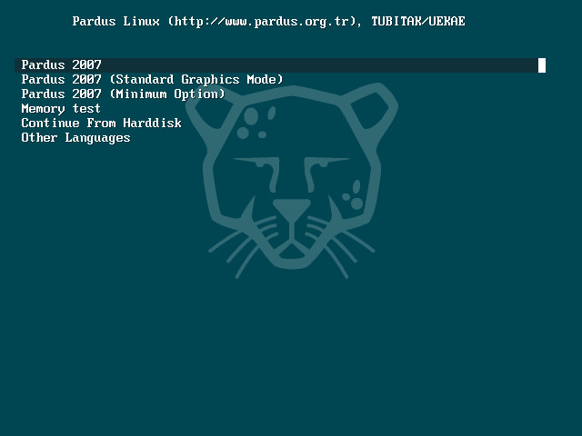

Pardus 2007 Screenshots: Installation
|  | ||||
| This is the Pardus Bootloader. To access this menu, select "Other Languages" and "English". Here you can try different options for boot, test your memory or continue from your harddisk. | ||||
Information and documents on Pardus web pages can be used freely anywhere with original source credit.
For information and suggestion(s) please write to info_at_pardus.org.tr
TÜBİTAK - UEKAE, PK.74 41470, Gebze / Kocaeli.